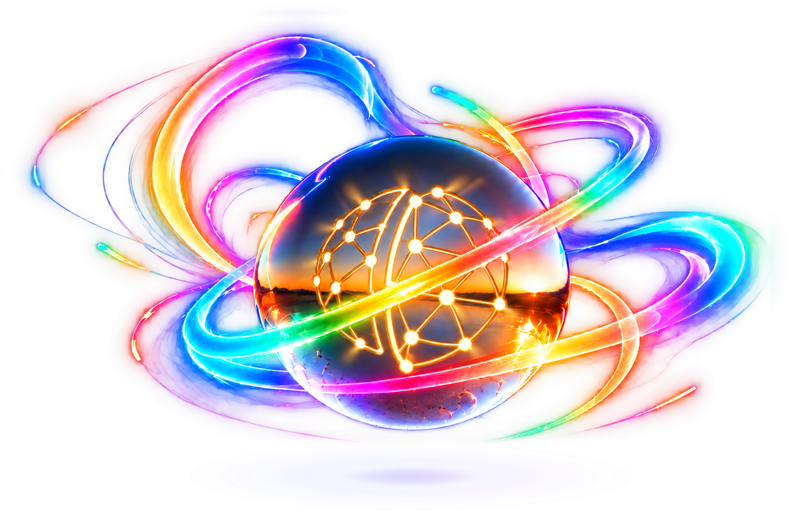
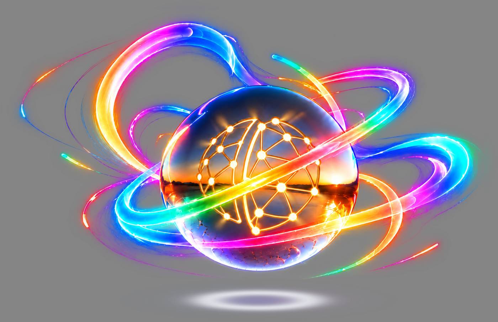
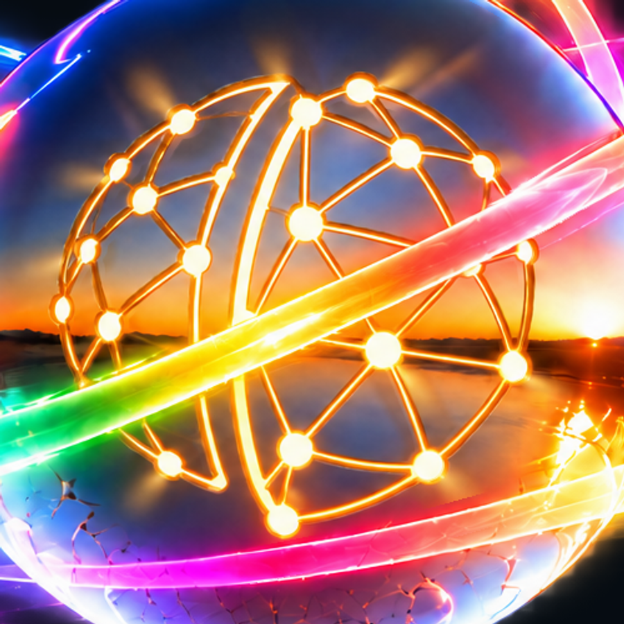

Contained glow · transparent artwork
Restrained ribbon glow, repaired logo and shorter light cones. Clean bottom glow. All light fits inside the PNG with a five-pixel transparent border.
Download transparent PNG · 4096×2654

On dark

On white

Transparency


